|
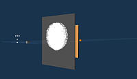 |
| 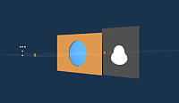 | 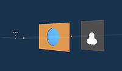 |
| 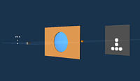 | 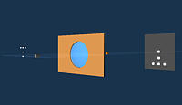 |
In the images below, an object (five point sources in the shape of a "tee") is outside the focal point of a converging lens. The images depict the scanning of an observation screen from a position close to object to the position for which the observation screen coincides with the image plane.
|
|
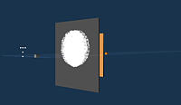 |
| 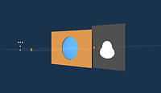 | 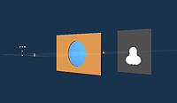 |
| 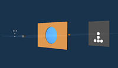 | 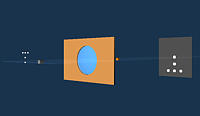 |
In the three sets of images below, a teapot object is imaged on an observation screen for three different orientations of the teapot.
|
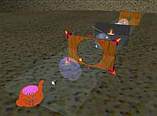 Geometrical Optics - Scene 1 |
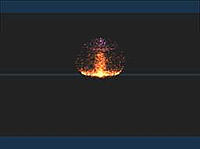 Geometrical Optics - Observation Screen 1 |
|
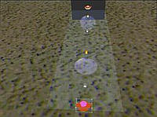 Geometrical Optics - Scene 2 |
 Geometrical Optics - Observation Screen 2 |
|
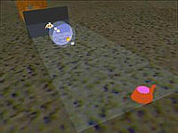 Geometrical Optics - Scene 3 |
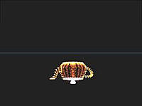 Geometrical Optics - Observation Screen 3 |

Created
by Srihari Angaluri and Kiril Vidimce
Send comments to comments@webtop.org